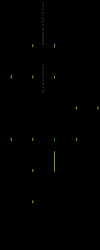
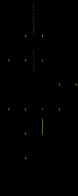

Introduction
To enable the performance optimization of application mapping on modern field-programmable gate arrays (FPGAs), certain critical path portions of the designs might be prearranged into many multi-cell macros during synthesis. These movable macros with constraints of shape and resources lead to challenging mixed-size placement for FPGA designs which cannot be addressed by previous works of analytical placers. In this work, we propose AMF-Placer, an open-source analytical mixed-size FPGA placer supporting mixed-size placement on FPGA, with an interface to Xilinx Vivado. To speed up the convergence and improve the quality of the placement, AMF-Placer is equipped with a series of new techniques for wirelength optimization, cell spreading, packing, and legalization. Based on a set of the latest large open-source benchmarks from various domains for Xilinx Ultrascale FPGAs, experimental results indicate that AMF-Placer can improve HPWL by 20.4%-89.3% and reduce runtime by 8.0%-84.2%, compared to the baseline. Furthermore, utilizing the parallelism of the proposed algorithms, with 8 threads, the placement procedure can be accelerated by 2.41x on average.
")
") 

License
This project is developed by Reconfiguration Computing Systems Lab, Hong Kong University of Science and Technology (HKUST).
For non-commercial usage of this open-source project, users should comply the Apache License attached in the root directory. For commercial usage of this open-source project, users must contact authors (Wei ZHANG, eeweiz AT ust DOT hk; Tingyuan LIANG, tliang AT connect DOT ust DOT hk) for authorization.
Documentation Hierarchy
- Basic Project Introduction: motivation, features and some experimental results.
- Get Started: guideline to use the placer for your work.
- Benchmarks and Experimental Results: practical benchmarks for evaluation and some experimental results at current stages.
- Publications: some papers which are the fundamental parts of this project.
- Implementation Explanation: the concrete explaination for the function module and the placement procedure.
Motivations
- Just reinvent the wheel for fun, try to build a complete flow and implement some state-of-art techniques in the latest paper.
- Resolve some existing constraints in some previous works and consider more practical situations, like FPGA mixed-size placement with a series of optimization.
- A beginner-friendly placement framework with clear hierarchy and detailed Doxygen-based documentation. We hope that it can lower the overhead for people who are also interested in this research area.
- Currently, this framework is under development and it is still far from our goals and the practical demands, but we are happy to share our progress in this GitHub repository. If you have any questions/problems/suggestions, please contact feel free to contact us (tliang AT connect DOT ust DOT hk)
Features
- supports placeemnt with a large number of mixed-size macros with shape constraints in practical FPGA applications.
- a set of optional optimization techniques to improve mixed-size FPGA placement QoR
- parallelizes the implementation of each stage of placement based on multi-threading
- modularized function implementation for easier further development
- flexible and extensible JSON-based placement configuration
- supports placement check-point importing/exporting
- a set of pre-implementation benchmarks from latest practical FPGA applications
- provides a set of Tcl scripts which extracts design netlist from Vivado and exports post-placement information to Vivado
Implementation Overview

Acknowledgement
We sincerely appreciate the kindly suggestions from reviewers, detailed explanations of UTPlaceF from Dr. Wuxi Li, useful advice on Vivado metric usages from Dr. Stephen Yang and fruitful discussion on some previous works with Ms. Yun Zhou.
Issue Report
This project is under active development and far from perfect. We do want to make the placer useful for people in the community. Therefore,
- If you have any question/problem, please feel free to create an issue in the GitHub Issue or email us (Tingyuan LIANG, tliang AT connect DOT ust DOT hk)
- We sincerely welcome code contribution to this project or suggestion in any approach!
(last updated Aug 17, 2021)